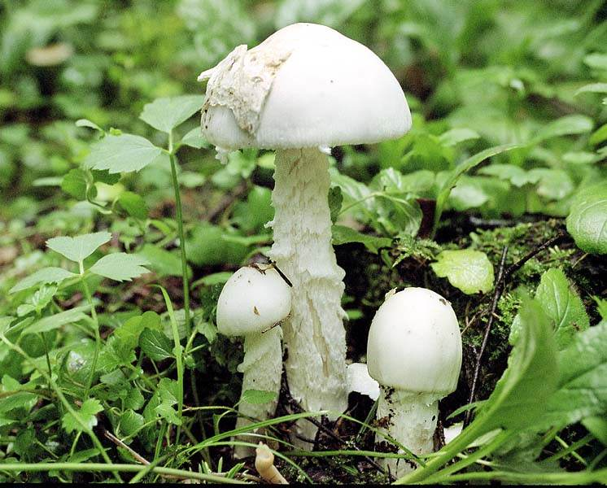
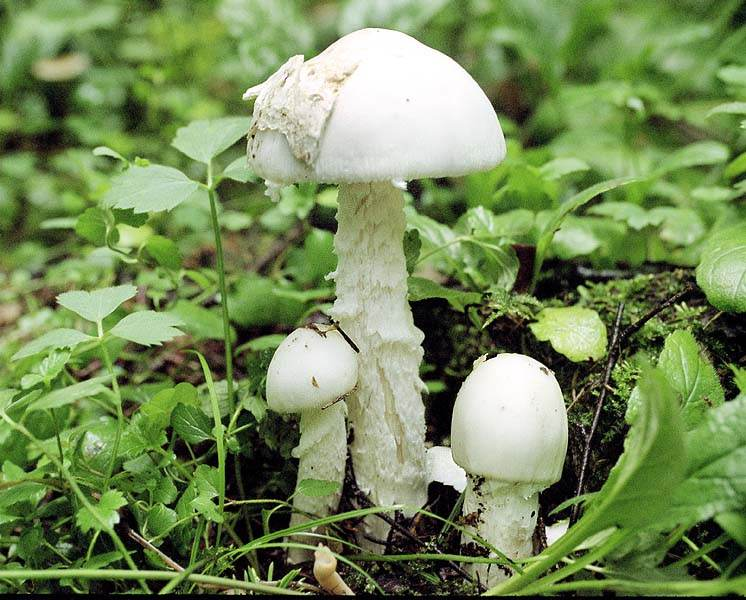
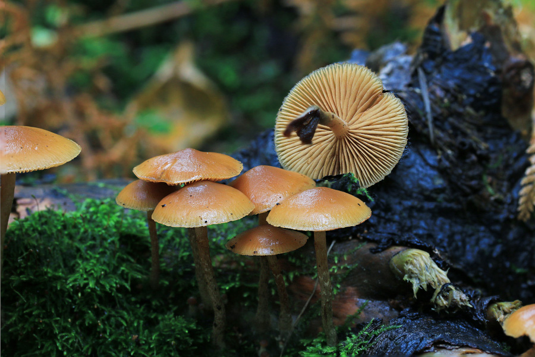
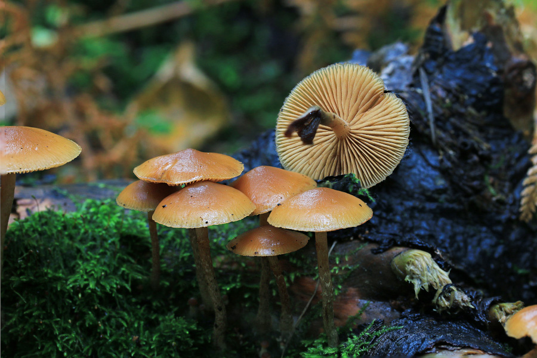
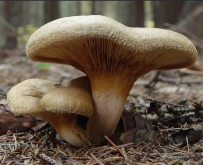
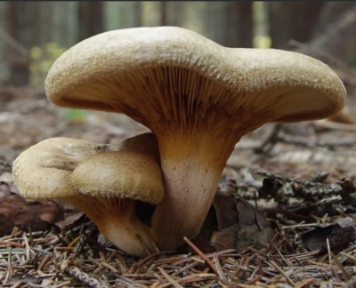

Люблю собирать грибы, пробовать их. В нашей полосе России (Пермский край) грибов много.
И есть ядовитые - смертельно ядовитые. Попробовал и "закончился".
Поэтому, прежде всего,
ядовитые грибы
- надо знать "в лицо".
Информации - много. Например,
видео от миколога.
Короткий обзор здесь.
В нашей средней полосе всего лишь пять видов смертельно ядовитых грибов:
При отваривании токсины грибов группы 1 - 4 не переходят в отвар.
Отваривание - не уменьшает их ядовитость!


Бледная поганка относится к мухоморам. Она отличается зеленая шляпкой.
Ее путают:
Это смертельный гриб номер один. Смертельная доза для взрослого человека
составляет примерно от одной трети до половины шляпки.
 

Мухомор вонючий и мухомор весенний очень похожи друг на друга и реально
отличить их может только специалист.
Обычно, у мухомора вонючего ассиметричная шляпка.
 

Галирина содержит те же яды, что и бледная поганка.
Смертельная доза для взрослого человека составляет от 20 до 40 грибков.
Похожа на летнего опенка.
Главным отличием от летнего опёнка является тот факт, что летний опенок
всегда растет пучком, а галирина, даже если рядом растет несколько грибочков,
они стоят каждый, как бы, поодиночке.
Кроме этого, у галирины на ножке характерный беловатый налет, который складывается
в некий неявный узор, а у летнего опёнка ножка покрыта характерными черными
точечками-чешуйками.
И у галирины под шляпкой достаточно явно видны остатки кольца или само кольцо,
а кольцо летнего опёнка очень быстро исчезает.
 

Многие грибники продолжают традиционно собирать её.
Её можно есть годами, некоторые умудряются даже есть ее всю жизнь.
Это уникальный, единственный в своём роде, гриб, который после какого-то
количества употреблений вызывает автоимунное (т.е. собственное)
разрушение организмом своих кровяных телец.
Эритроциты крови начинают уничтожаться защитными силами организма,
как враждебные.
И это действие вызывает свинушка тонкая.